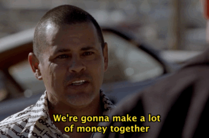
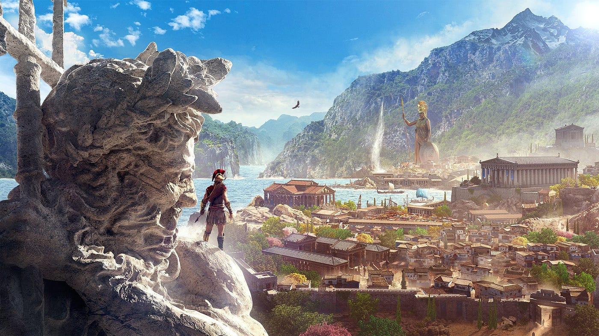
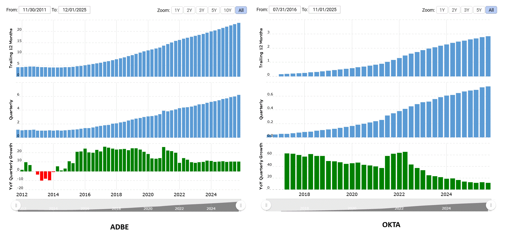

Jan 15th, 2025 Update:
NVDA went from 130 to 155 ish and fell back to 130 in merely three weeks after writing the blog. I bought 40 calls right before writing the blog, sold 20 at 144 and bought 1000 shares at the same time. Sold another 20 at 152 the second day. Just bought back 500 shares at 135. Still experimenting on the dip buying process but it is powerful indeed. Why share prices have such large volatility, even for a 3 trillion company? I'm reading some notes lately and I'll borrow one sentence from it: I don't know and I don't care.
Jan 30th, 2025 Update:
My dip-buying journey continues. I find it very hard to talk about my ongoing dip-buying trades, but I'll give it a try:
1. I bought 150 calls of EWZ when it was trading at 23 in December. My guess is that the fear of Trump supporting Bolsonaro will soon fade. And commodity prices will somehow recover a bit. The price of EWZ was stabilizing at 22-23 range and looked like a good buy. So far I'm right and EWZ is trading at 25.5. Commodity prices have been recovering and Trump only cares about money. Seriously, accounting for exchange rates, EWZ hasn't moved yet. Trade is still ongoing, and let's see how it goes.
2. I just bought 2000 shares of Ubisoft, a dying game producer that has been constantly making low quality games recently. Facing multiple debacles since last year and vows to change its structure. Claims to have cut 200 million euro of cost. Shareholder sentiment cannot be worse, and I see no signs of improvement. Incels hate this company so much because of the DEI emphasized in its games (Is this hate even necessary, incels?). However, the stock price stabilizes at the range of 11-13. This, to be honest, fits perfectly into what I discussed in a previous post about redemption and sentiment. Ubisoft had its redemption in 2013 and it knows how to do it (still the same owner). I say, why not have some (limited) fun? Worst case is Ubisoft getting acquired by some large companies like Tencent.
3. I haven't bought dips in NVDA yet (but I believe that I should). The deepseek drama is most likely a fade. Wall street needs new stories every month.
Feb 3rd, 2025 Update:
So many people out there trying to talk like an expert in everything. I'm gonna be a degenerate as much as I can.
If you believe that all these data centers built by Stargate and large tech companies still need chips from Nvidia, then this is a dip to load more shares. I did. Bought 500 shares at 116. We'll see. All I can say is it will take many months if not years for a 3 trillion company to show cracks. Just take a look at apple. Do not take narratives seriously.
Feb 12th, 2025 Update:
So, yesterday I was talking with a friend about markets and upcoming CPI report. He was buying dips in Tesla stock yesterday. I said, today's CPI report might cause the market to drop, but this will most likely be a fade. Simply because the consensus was pricing 4-5 rate cuts for 2025 in October but by yesterday it was pricing 0-1 cuts (that info was from Nick Timiraos, Jerome Powell's fav WSJ journalist). Things cannot be worse on the inflation side, threrfore, CPI number doesn't matter.
Today I woke up at 5:10 and saw Tesla dropped 2% pre-market. Bought 200 immediately at 321.5. Later I was told that was the low for the day. Market panicked after the CPI report but soon miraculously recovered. Tesla didn't even budge during the "sell off".
1. I sold 1000 NVDA at 134 on Monday and Tuesday. Bought 500 at 116 and 500 at 122 a week ago.
2. I now have 5000 shares of Ubisoft. It's amusing to see most gamers wanting Ubisoft to die. It reminds me of the last time I saw many Japanese people hoping for the downfall of Mitsubishi Heavy Industries. Summary: They are a bunch of morons who live & lost in narratives and never act in their own best interests. (Check out this loser. Two years ago, I commented under this video, "Some look forward, while some look backward.") Alas, I think Ubisoft is a easy 3X from here. 10X is questionable and also might take a decade. However, things seem to move much faster nowadays. Prices move fast, look just like 06-08 period. I'm not implying a coming crisis, though.
BTW, just checked this loser's Youtube channel. He's still offering subscriptions and "financial" videos. Ah, meaning this poor bastard is still struggling making money in the ACTUAL market.
But again, at some point, I also forgot to look forward on my value stocks.
Mar 8th, 2025 Update:
I'm hating this drama already. Although the tariff is likely another fade, putting most money on US-related stuff is exhausting. I'm back to -5 ~ 0% year to date. Should I be happy because of my performance relative to my large crypto holdings (which is down about 30 - 40%)? No. And I'm tired of Trump. And I do way better on European/Japanese stocks (because of low volatility and lower valuations). I guess I will keep my dip buying journey but majority of my money will get moving in the upcoming pumps. I say there is 50/50 chance either I got trapped in the Crypto narratives or I profit from it. I'll keep holding this shit for some more time.
All the whining aside, a responsible dipper should buy NVDA now.
Mar 11th, 2025 Update:
FOMC meeting is on March 18-19. Opex is on 21st. Nasdaq down 15% since 2 weeks ago. I mean, it is somehow idiotic if someone is expecting more downside from here.
This is likely the bottom between now and Opex. As a responsible dipper, should buy NVDA for a brutal bounce.
Hard to be responsible right now. Which means I have probably bought a lot of NVDA yesterday, and am preparing to buy more once bottom is comfirmed.
BTW, Mar 21st call option on 68 TQQQ is roughly 1.2. 100 call options cost 12K but represent 2M Nasdaq. I think that's pretty exciting and dangerous.
But, hey! I bought call options on a shitco called Kratos. 60 call options when traded at 27, sold at 35 during the volume spike. Bought back 40 calls at 25 and sold at around 29 yesterday during the volume spike (again). I probably could use that profit for TQQQ options. And I probably have bought some already.
I once heard someone saying, "sold $DJT at XXX, the volume was good." I recently found volumes to be pretty interesting indicators to watch.
One important lesson: I should have never gotten influenced by my friend and traded Tesla. Do dirty works with small companies that no one watches.
One simple observation: Trump is helping Elon to pump Tesla stocks today. Meaning Trump is probably likely done with tariffs at least between now and opex.
Mar 12th, 2025 Update: Thoughts after today's CPI report
So far, 15 minutes after CPI report, the market has bounced pretty hard. Accounting for options and futures, I added about 6M of QQQ in the past 2 days. (Which was just 2M futures and 200 TQQQ call options as discussed above.)
If the market is choppy for another several months, there're quite a lot of opportunities in NVDA. Looking back, it was already quite obvious on Saturday that trading at 105, market made a mistake on NVDA. Because a 3 trillion company will never drop 30% in 2 weeks and never come back. Much can be learned from Apple, which had mediocre earnings from 2022-2024 but price kept bouncing at a range. Something can be also learned from SMCI, a fraudulent company that had its share price quadrupled in early 2024. It got almost delisted from Nasdaq several months ago and not a single accounting firm was willing to sign on their financial statements. Quadrupled again since then. Rome didn't fall in a day and can't fall in a day.
BTW, just heard that this was the 5th fastest market correction since 1950. Okay...
When TSLA was dropping like a stone, narratives were that Elon was hated by everyone because he supported Trump. Also his insider siblings were selling the stock. Now I just saw that EV (electric vehicle) sales are up 50% YoY for Febuary and are up 30% YTD. Following narratives is never a viable strategy.
Mar 25th, 2025 Update:
I have no idea what will happen next, and I took most leverage off. This rally is weak so far, and I lost all my money on options. However, made a lot on futures. I do believe QQQ should be able to reach 510 before the next drama, but I'm too tired to bet on it.
As mentioned earlier, I'm moving some money to European and value stocks. These stocks also suffered big losses during the sell off and valuations look attractive.
Sold some of my Ubisoft shares. The new AC Shadows is mediocre. Therefore, the biggest question regarding Ubisoft is: What are the sales/earnings numbers look like in the next 3 years? TBH I don't think even the CEO has a clue. This is a stock with uncertainty.
BTW, CD Projekt is trying to enter the mobile game market again. They keep trying and they are doing it right.
CD Projekt's earnings release today shows that 411 developers working on Witcher 4, 84 on Orion, and 49 on Sirius and 17 on Hadar. I'll say this for one last time: Cyclicality is gone! Stock should be 3X when the market realizes that.
CD Projekt shares are down 15% because the management confirmed that the Witcher 4 will come out in no earlier than 2027. These "traders" are quite something if they were expecting the release earlier than 2027. Please sell harder, I want to buy it at a cheaper price!
Just saying, the road map for next three years should look like this:
Late 2026: Start releasing trailers and game plays. Bullish, pump it!
Early 2027: Game release being delayed to early 2028. Terrified, dump it!
Mid 2027: New trailer looks good. Bullish, pump it!
Early 2028: Game about to be released. Excited, pump it!
Just start buying now and occationally watch for the volume and trade a tiny bit of it. Judging from the volume, CDR just reached a local bottom. Shame, I know.
I probably will not talk too much about CD Projekt any more. Not much uncertainty at this point. This is a good management that knows what they're doing.
God bless CD Projekt and my stocks!
Mar 29th, 2025 Update: Ubisoft Spin-off
Things change fast. Ubisoft is creating a new subsidiary, which has new managment and Tencent owns 25% of the subsidiary. Ubisoft is moving all its "good" and "lean" assets into this new subsidiary. By just looking at it, Ubisoft is sending a strong message: I don't want to die!
A new subsidiary is usually only the step one of many moves.
Stock was up 10% on the news but closed red for the day. Seriously?
Dare I say it: Ubisoft is going up. Look at the volume on Friday ffs.
Apr 5th, 2025 Update: Crazy market crash
This is a very special time that I want to recommend thinking about buying US stocks. NVDA has now a trailing twelve months P/E of 32. Google 19. Amazon 31. They were probably a little cheaper during the 2022 bear market bottom. However, their earnings were negative or shrinking in 2022. Now, all three companies are growing at 20% annually.
Yes, when situations are bad, people ignore the outlook. And I know history earnings are deceiving. You could argue that their earnings will be cut down due to Trump-induced recession. Yes, tech companies might look very stupid for investing so much if AI gets trashed during the next economic downturn.
But this is the time to get excited and probably optimistic. Trump will likely get forced to drop the tariff very soon. He may even drop it before the 9th. Rome is falling but slowly falling. It still has the best class monopolies of the world. Things will never stay this bad. And even if this is the start of a depression, let's confirm the situation first. If earnings are terribly bad going forward, let's confirm it first. But the point always is, don't be overwhelmed by fear. This is probably not the bottom for the next 12 months or 24 months. But this is unwise to expect several 5% drawdowns next week.
Some good companies are cheap. I don't doubt that they might become cheaper. Trump can always make another harmful drama both for long term and short term. In the worst case, companies deserve a cheaper valuation based on reduced earnings. And in the worst cases, European and Japanese markets aren't immune to the economic damages. But that is not going to happen right away. But there's always hope, and there's always a bull market somewhere. And let's confirm the worst case first. But for now, this is the moment to think about getting a bit greedy.
Apr 9th, 2025 Update: Crazy market rally
I learned one lesson in the past 3 months: You never go broke by taking profits. Watch for 30Y yields.
In fact, I bought 1.6 million of QQQ and 200 call options on bitcoin etf IBIT last Friday. Sold all QQQ now and bought another 200 options on IBIT. Ha, now I've got some time to think about Ubisoft. I'm sure about one thing: Ubisoft has more upside than downside. Anecdotal news: Some activist investors are calling for €23/share special dividend.
BTW, CD Projekt didn't drop below 200 PLN, which was the low post earnings. This is very bullish. It might take the entire European market to bring down CD Projekt further.
God bless CD Projekt and my stocks!
Apr 12th, 2025 Update: Out of the cave
Last week the 30Y yield passed 5% briefly.
The previous two times 30Y reached 5% was Oct 2023 and Jan 2025. Fed officials changed their tone regarding inflation right after the yield increase in Oct 2023. They also softened their tone on rate cuts early this year.
This time is a bit different because "Fed ready to stabilize markets if needed." Wow, something they never said before during this hiking-cutting cycle.
Who's going to win? Fed or "bond vigilantes"? Anon, pick a side. I bought 10 ZB futures on Friday. That's about 1 million of 30y bonds.
I think what people don't understand at this point is that to push yields higher, you are not just fighting the Federal Reserve, but the central banks all over the world. Because of the collaborations among central banks, and significantly more crises that other countries went through, hard to believe they don't owe Federal Reserve any favor. Think about the Yen depreciation and European bond crisis in 2022.
Things became interesting when Trump dropped some tariffs on computers and chips over the weekend. There is no more justification for dumping bonds.
Once tariff pressure starts to wane, and cool down in inflation becomes obvious, the Federal Reserve likely wil start to cut rates again. But more importantly, when bonds rally from here, stocks likely also go up. QQQ was up 20% Nov 2023 - Feb 2024. And it was up 8% from Jan 13th to Feb 19th in 2025.
Micron ($MU) is something worth looking at. It dropped from $110 to $65 due to tariffs. Just imagine the speed how it is going back to $100.
"Ignorance is repeating the same shit and expecting a different result." —— Ron Vara
Apr 19th, 2025 Update: Does Trump have a script?
Attacking Fed chair, trashing the economy, sounds like something Trump would do. I've heard from someone that Trump actually had a 60 day script that started from Jan 31st to put tariffs on every country, then a 30 day script to focus on China. I actually believe what this guy said because of his accuracy on lots of previous events.
Okay...The second script is about finished. And Trump did many seemingly redundant things that I doubt might be linked to the third script, that is, if he had one.
"I don't care about stocks market." "I don't even watch it." Are these cruel comments even necessary? Stocks market is the economy. 80% of the consumption is contributed by the top 20%. Which means a bear market is definitely hurting the economy because for top 20%, wealth is mostly in stocks or private shares. Moreover, the economy has been slowing down since last summer, making the market more sensitive.
Assuming that Trump does have scripts, I wonder if the third script is about crypto - an asset class that is immune to attacks on fundamentals. Trashing the traditional stocks market might let crypto look more attractive. While Trump's loyal dogs all bought loads of crypto, maybe its time to feed them? Of course, it's gonna be hard to believe that Trump has scripts.
Apr 23rd, 2025 Update:
People remain skeptical about the rally, fearing that mf Trump might pull the rug again. That's precisely why the potential returns over the next few months could be rewarding.
Apr 24th, 2025 Update:
Trump is caving from tariffs. Fed is cutting rates. Waller made that clear today. May 7th, or worst, June 18th. May I propose an interesting opportunity?
Leverage long on Nasdaq index (QQQ) on May 2nd, 4th, targeting 9th; June 13th, 16th, targeting 20th. My guess is that bitcoin (IBIT) works as well. You have to place bets on Friday because Nick Timiraos will definitely leak the info on Sunday, and you can place additional bets on Monday to avoid uncertainty over the weekends.
WRNING:
I'm really bad at trading short term options.
Re: Bottom at 7th
You know that was the bottom when you see 18 P/E on Google, and 32 P/E on Nvidia. Not because this is a low P/E ratio, but it has not been this low post 2020 (or even 2016)! Why this time should be different?
"Ignorance is repeating the same shit and expecting a different result." —— Ron Vara
May 2nd, 2025 Update:
No, probably no rate cuts.
Wow, CD projekt is up 10% today and 25% since April 9th. I don't even want to know why. Probably because losers now realise Take Two is shit (which is down 15% at some point today)?
Jokes aside, GTA 6 will make Take Two a lot of money because of micro transactions. And this income can last for many years because this is an online-based game that can be constantly updated for new contents.
However, not trying to underestimate but how much money can be made for the stock to be attractive? Take Two has a market cap of nearly 40 billion. I seriously doubt it.
About a bit more than 40% return YTD. I could've done much better if I was waiting for most of the time and only catch a few good trades. For example, the Nvidia after the deepseek; the Nasdaq rally post April 4th; 30 year Bond and CD Projekt post April 9th; Ubisoft on Feb 12th etc. However, when I bet too often, like I did, I sometimes lose the big picture and be unable to raise cash for the important events. Challenge: make no more than 5 trades for the rest of the year.
Anyways. God bless CD Projekt and my stocks.
MF Trump will be there for another 3 years and 9 months. We will have a lot of dislocations to explore.
May 4th, 2025 Update:
Nick Timiraos did not have any articles today, meaning, at this point, the Federal Reserve still cannot make up its mind for the rate decision on Wednesday. So, I think it's fair to say the chance for a 0.25 rate cut is 50%.
May 10th, 2025 Update:
Market will make new lows this year. My analysis shows that the next market crash will start around mid July.
May I propose an interesting opportunity? Put all the money in UVXY on July 10th. (When I say interesting opportunity, it always ends up with shitty results. Good opportunity is never obvious.)
My analysis:
The way how Chinese trade representatives described the negotiation over the weekend is super positive and optimistic. First, let's enjoy the rally till late June.
May 19th, 2025 Update:
Waiting and doing nothing is the hardest part. But you are getting paid exactly for that.
NY Fed President Williams today says you can take the summer off:"It's not going to be that in June." Economic uncertainty justifies Fed patience.
It's pretty hard for me to agree with Williams on rate cuts because economic uncertainty will remain for the rest of the Trump presidency. Also partly because I have $4 million of bitcoin and about $2 million of $RIOT stocks, all in the form of call options. Who knows, maybe a downgrade and an ugly non-farm report will change their minds?
What surprises me is that the trading volume of crypto hasn't gone up yet, which is an early indicator for selling. Madness.
I'm probably moving to Europe next year. Capital gain tax is too high in Canada (25% + 25% instalments feels I'm crippled). Gotta find a way to reduce it. Guess I will settle down in Athens or coastal France. Athens more likely.
May 22nd, 2025 Update: 1/5 trade
My guess is that young day traders are selling $CDR to buy bitcoin. Funny, where were they 6 weeks ago?
Watch for trading volumes, and sell bitcoin when it's in high demand, and buy CD Projekt because nobody wants it. I guess, as volume is starting to spike higher, I might need to sell my crypto in the next 1-2 weeks. Some(I) say the Fed is cutting/doing QE in the next meeting, which will push bitcoin even higher. I guess we will see.
God bless CD Projekt and my stocks!
"This is just the beginning."
May 28th, 2025 Update:
Cyberpunk 2 (Orion) just finished its conceptual framework and is moving to (pre)production. My previous guess was incredibly accurate: It is coming 2029-2030. Remember, Withcer 5 and 6 is coming out in 2030-2031 and 2033-2034, as recently being confirmed by the management.
CD Projekt has 226 million revenue and 86 million net profit this quarter. This is the power of high profit margin and organic business expansion. Witcher 4 finished conceptual phase in may 2022, and now, Cyberpunk 2. Considering the ongoing production cost and the 40% profit margin, this is truly remarkable. Although the marketing cost before release is going to be huge.
God bless CD Projekt and my stocks!
June 4th, 2025 Update:
CD Projekt is up 20% in 2 days. I mean, is that surprising at all? It was hovering at 220 and you knew what to do! And volume actually showed a possible bottom.
CD Projekt was flat after earnings but is now up 20% on Witcher 4 gameplay showcase. This tells you most people get high on narratives but do not give a shit about actual numbers. This also tells you that value investing shouldn't be hard and, on average, should outperform the market.
I bought 2000 shares at 225 on average last week. Could have bought more but I'm now still neck deep in bitcoin. Idea was perfect. Execution was a stinking pile of dog shit seasoned by piss inside a car under the summer heat (an accident happened to me last week).
But do not fret! There is pump and there is dump.
God bless CD Projekt and my stocks!
June 15th, 2025 Update: 2/5 trade
Lululemon is interesting. I've long heard that retailer is a sucker's game. Data frequency is higher than other industries therefore the price is volatile. Plus, fashion is unpredictable.
Lululemon lowered guidance from $15 to $14.5 and the stock price went down like 30%. I'm not sure about whether this is the bottom yet but this is my second trade. I'm all cash except a trimmed position in CD Projekt.
My mitsubishi purchase was, technically, a value investment wrapped by a macro trade. The entire industry was going to hell. I heard that was also a great time to buy oil, even coal companies for 1000X gains!
So, I often wonder, where is the next beaten-up industry? However, you don't just find one or two every year -- The situation is rare. But I might spot a candidate! Homebuilders.
God bless CD Projekt and my stocks.
June 21st, 2025 Update:
Rumor has it that CD Projekt is developing new DLCs for both Witcher 3 and Cyberpunk 2077. This is laughable. Thing is, if you look at earnings report, no one is working on the two games anymore. Plus, what is the cost/benefit for developing DLCs for outdated games with poor graphics? Also, CD Projekt has switched its software framework from Red Engine to Unreal 5 since 2024, meaning switching back to old framework incurs unnecessary learning costs. Anyways, these rumors have brought the stock price to new local highs. Time to sell some.
Make no mistake, I like these rumors. These rumors, and hearts of greed, are reasons why volatility exists.
I'm sure CD Projekt is really good at keeping gamers excited, because it is maestro at marketing. But the only big news and big earnings boost is Witcher 4, and a bunch of upcoming games in 2030s. And the most likely timing for Witcher 4 release is between late 2027 and late 2028. I have no doubt that the stock price will be at least 400 PLN/share by the release, but this is a very slow grind higher from here. Now, the price looks too rich to me. No good returns if the stock stays at 270/share. (Another logic is that CD Projekt will be trading at well above 400/share by release. Say 800/share? Likely, but depends on extreme optimism.) Thinking about all the recession fear and tariff drama coming second half of 2025, there will be volatility and (hopefully) large pullbacks.
God bless CD Projekt and my stocks (including Lululemon).
July 9th, 2025 Update:
If no one believes Trump will impose tariffs on August 1st, then he probably will - because without market panic, there's less pressure on him to hold back.
If Trump hadn't realized it before, he certainly did on April 9th: A stock market flash crash makes him more money than crypto ever could. Why? Because he makes the timing of bottom, and the strength of the rebound.
If he cannot stir panic any more, what’s the point of doing a scammy president? My guess is that the prevailing narratives of TACO will, once again, prove to be wrong.
Oh, yeah? You think this is a roaring bull market? I'm curious about what you were thinking on 5th of April.
"Oh, lord. I'm begging you. Please get the market to all time high for one last time. I promise I'll sell all my stocks and never touch this market again."
July 25th, 2025 Update:
An obvious evidence why the update for Cyberpunk 2077 was not new DLC: It was update v2.3 not v3.0.
Anyways, as the stock is already more than 10% below my sell price, I say it is time to load back up. And I will buy a lot if volume spikes during the sell off (at 240ish I guess).
This is the first time I do experiment on combining volumes and value stocks. CD Projekt is a good one to play with as it seems.
God bless CD Projekt and my stocks, including Lululemon.
Aug 14th, 2025 Update:
Hard to believe that I'm saying this with the market at all-time high: This is probably a great time to do value investing and buy some stocks.
As I've been indicating, I'm buying Lululemon. I also bought some Novo Nordisk last week. Today turns out Michael Burry is on the same page: He is also buying Lululemon. Burry is not a big short. He is a pretty good value investor.
Market is at ATH, and I'm buying (a lot of) stocks. But don't get me wrong, this is a very strange time -- the growth of economy is slowing down bigtime since 2021. No, 2022 was not a bear market -- people were just scared about the war, sky high inflation, and rate hikes. Companies were growing revenues at 30% in 2021, 25% in 2022, 20% in 2023, 15% in 2024, and about 0-5% this year, which is consistent with the disposable spending numbers. The slowdown is massive.
Considering the sluggish consumer spending, less eye-catching innovation and non-stop price increases, Apple has a crazy valuation. No wonder Buffett is selling it.
Because of the slow down in earnings and negative sentiment, stocks such as $LULU and $NVO are already down >50%. Traders wanted to sell, because everything else was going up. This exaggerated the decline in stock prices.
I don't know the investing process Burry does, and dip buying is a new skill that I've been learning since last December. But I ask myself, is slowdown in growth the fault of companies wrongdoing? Well, growth of Novo Nordisk is slowing down from 20% to 7-8% because of the production hurdles and Lululemon's performance is still the best among retailers. Stock prices are down, analysts are just retards that always play catch-up with their "price targets" and day traders play the panicking part of the game. At this point, situation can hardly get worse. Sometimes, more often than not, positive surprises may come.
Lockheed Martin is another one that's pretty interesting: It is having issues with its profit margin. Is this problem temporary? Damn sure it is. Assuming a normalized profit margin being 11-12%, it is trading at a normalized p/e ratio of 12-14.
BTW, interesting observation: average price target of CD Projekt from analysts is just the stock price with 4-month lag. Fucking imbeciles.
People sometimes laugh at value investors for minimal gains on shitty companies while everyone else is making big money overnight on tech stocks. I disagree. These are entry level value investors that are bad at this game.
There are two elements in investing: price and time. At this price level, Lululemon and Novo Nordisk can easily beat the overall market for the next 12 months.
God bless CD Projekt and my stocks!
Aug 15th, 2025 Update:
"Novo Nordisk's Wegovy gets accelerated US approval for liver disease MASH" The stock was up 10% today.
Like I said yesterday, more often than not, positive surprises may come. The window of buying $NVO cheap cheap was mere two weeks.
God bless CD Projekt and my stocks!
Sep 6th, 2025 Update:
Lululemon was down 20% on earnings. Ooof, that hurts.
Glancing at the earnings, I don't think situation is that bad. Lululemon is growing 20% ex-North America, which accounts for 1/3 of the revenue. Meaning that by 2028 they will have an ex-North America revenue source that is as large as North America (assuming growth rate remains 20%, which is questionable). Earnings were guiding down to 12.7/share which accounts for 2/share tariffs. This means their business is still growing under an economic slowdown, and earnings per share remains the same as last year. However, you know slowdown will eventually end, and tariffs will eventually go away with Trump. And you know the only thing that Trump knows about handling recession is - stimulus! Of course, and forcing the FED to cut rates to zero.
Speaking of the economic slowdown, I have 10 ZB contracts that I've been rolling since June. You know the next FED chair will do quantitative easing (in 8 months). Considering that 30y yield is still at 4.8% range, I might add to 20 contracts.
God bless CD Projekt and my stocks!
Oct 20th, 2025 Update:
My best guess is that CD Projekt will see a summer 2023 style sell-off just to clear excess leverage. Of course, that's just my guessing. 250 is an okay spot to add back to a normal position. If CDR drops to 180, Christmas comes early!
Regarding the US market, we are probably still in the late stage of a bull market. At least the AI hype can keep going for some time, and crypto hype is yet to start.
God bless CD Projekt and my stocks!
Nov 9th, 2025 Update:
If I remember correctly, CD Projekt published its Witcher 4 trailer on Dec 14th, 2024. It's very likely that the second trailer is only a month away. It is also very likely that CD Projekt will indicate a release date in its second Witcher 4 trailer. Likely the date is sometime mid 2027, and it is almost certain CD Projekt won't deliver on time.
Anyways, I hope there's a good dip between now and the second trailer release.
God bless CD Projekt and my stocks!
Nov 26th, 2025 Update:
I have to say, the numbers for CD Projekt look so good that I'm not even sure if the stock will ever go back to 180 again. I guess, if it doesn’t, this is why you need to buy at 250, at 230, or even lower. Missing excellent long-term opportunities is much more painful than having temporary losses. I learned that from Mitsubishi Heavy. A 10% increase in headcount and a net profit margin rising to more than 55% were not things on my bingo card. I should note there is a one-time boost from the Switch 2 release. But still, this is Nvidia-level margin. Of course, the next big event is still Witcher 4 - and Witcher 4 only. Don’t read too much into a single quarter.
It is truly amazing to see in real time what companies can accomplish. In mid-October 2023, when I bought my first 500 shares of CD Projekt, my expectation was that revenues from Cyberpunk 2077 would decay very quickly, maybe even at a 50% per year pace. I thought that going into 2026 and 2027, CD Projekt would have to finance its development costs. Of course, with the release of Witcher 4, they would then make large sums to fund the rest of the development — Cyberpunk 2, Sirius, Hadar, etc. Two years later, it turns out I was terribly wrong. They made 481 million in 2023 with the release of Phantom Liberty, 469 million in 2024, and they've already made 348 million in the first three quarters of 2025. To put this into perspective, they made 248 million in the same period of 2024! They are likely making 700 million for the whole year!!! In 2020, with all the lockdowns and the release of Cyberpunk 2077, they made only 1.1 billion.
Where is that 50% per year decay that usually applies to outdated games? If I had stuck to my previous expectation, I would have assumed the stock price of CD Projekt would perform poorly into 2026 and I would have been waiting for a dip lower than 100. Is that so? Jeez, 700 million net profit in 2025? This implies a 30 P/E ratio. Yep, the same level when I first bought it.
Good companies are for making miracles. God bless CD Projekt and my stocks!
Nov 27th, 2025 Update:
Was looking for earning call transcript this afternoon but only found this. It is amusing to see how reporters are still one decade behind on what is CD Projekt. The article states "While The Witcher 4 won’t launch before 2027 'at the earliest,' this presents timeline for when CD Projekt RED may start winding down production and gradually shifting team members to Cyberpunk 2." Ah, this is ridiculous because this is not gonna happen.
Here is CD Projekt's timeline: It is pushing to release Witcher 4 in 2027, Witcher 5 in 2030, and Witcher 6 in 2033. The Boston studio is making Cyberpunk 2 targeting a release window of 2029 to 2030. This means develop team will grow to a full size before Witcher 4 release. After the release of Witcher 4, Witcher team will have to work on DLC and Witcher 5. If a full team means 500 people, by 2028, CD Projekt will probably have 500 on Witcher 4 DLC, 500 on Witcher 5, and 500 on Cyberpnk 2, which is a bit more than a double from here.
I'm pointing this out just to show how stubborn people really are, even though they don't notice. CD Projekt is no longer a small producer constrained by capacity. By the way, by "gradually shifting team members to Cyberpunk 2" you mean relocating 500 folks to boston?
CD Projekt spent all the profits this quarter on dividends and buybacks. I don't like that at all. There is obviously a headcount increase in the next 3 years. Buybacks are silly (They did only a bit).
I'm curious to see if CD Projekt can maintain this level of profit margins while successfully publish the three games before 2031.
God bless CD Projekt and my stocks!
Dec 19th, 2025 Update:
30 year yields are at 4.85%. 4.9% - 5.2% range was when the FED became very nervous in the past two years. Inflation is falling while the economic activity is slowing. Less reasons for higher long bond yields. Plus the new FED chair, no matter Chris Waller or Kevin Hassett, will start QE for sure. You can tell FED is a bit anxious for doing too much QT.
I'll be less jumpy in 2026. Probably will maintain the two main positions for the whole year: CD Projekt Red and ZB futures. Of course, I'm also dipping my toes into the homebuilder stocks.
Just found something interesting: Despite from 20X since Oct 2020, the stock price of Mitsubishi Heavy is actually flat in 2021 and June 2022 - June 2023. I'm not saying this applies to CD Projekt Red, and neither am I saying CD Projekt will 20X. I actually think it will do better in the next decade or so. Patience, patience, patience!
God bless CD Projekt and my stocks!
Jan 7th, 2026 Update:
200/share in Jan 2025 was not an attractive price if you use 400/share as the target price by Witcher 4’s release in 2027, but 240/share in Jan 2026 is definitely not bad. Maybe tourist investors are not very good at reading, and that’s why the market was so excited about the not-so-good news -- a new Witcher 3 DLC in mid-2025. But the facts have changed since the last earnings report.
A new Witcher 3 DLC by itself has minimal economic value. You cannot expect many people to buy a decade-old game with shitty graphics. However, making it takes a similarly large effort. As I mentioned before, CD Projekt is now using a new game engine called Unreal Engine 5. There would be switching costs if CD Projekt decided to develop the DLC itself.
But if you consider this DLC as a promotion to bridge the narrative gap between Witcher 3 and Witcher 4, things start to make sense. Outside contractors - largely former CD Projekt developers - are working on the project, meaning the cost will be predictable. And if, as indicated in the earnings call, the DLC is to be released in 2026, then Witcher 4 is likely coming out in H1 2027. Maybe CD Projekt traders are illiterate, and that is why the stock price has not moved since the last earnings call. Oh well, I say it’s CD Projekt’s fault. Should’ve shown them some sexy videos and graphs instead.
God bless CD Projekt and my stocks!
Jan 10th, 2026 Update:
August 2023 there were news around that Buffett had just bought some high-end homebuilders e.g. D.R. Horton, Lennar. That's when I started watching homebuilders.
Maybe even to Buffett's surprise, 2022 was the peak for homebuilders and long-term interest rates stayed high for multiple years. Homebuilders can offer lower mortgages, and that is lowering their profit margins. In total, homebuilders are slightly down from the level when Buffett bought them. And I'm talking about luxury homebuilders. There are homebuilders that focus on basic affordable homes that are more sensitive to rates. And these lower-end homebuilders have suffered more. For example, LGI Homes. When I said I dipped my toe into homebuilders, I was saying that I bought LGIH.
I started looking for Japanese companies when I heard that Buffett bought a load of Japanese stocks. And I found Mitsubishi Heavy. It has outperformed all five companies Buffett bought, a lot. I found CD Projekt when I was reading financial reports of all these mega companies in their early days in the dot-com bubble. And now, I found some more leveraged homebuilders because of Buffett, again. Although this is a really small position and I have no plan adding, or selling.
People say 2026 will be another shitty year for homebuilders. I do believe that. But I do also believe this is not a bad entry point for homebuilder stocks. You see, stocks do not have to bottom at the darkest times, and you do not have to time the bottom of a stock to profit. Sometimes, bottom appears when things are already bad enough. Sometimes, things merely stopped getting worse. I was lucky when I bought the all-time bottom of Mitsubishi Heavy in 2020, and bought a nice local bottom in CD Projekt in 2023, so there is a feeling about it. Three hopeless years, a very lucrative industry, 8X distressed earnings, I would say things were getting close.
When every adverse condition has occurred, you have to start hearing some good news then. Since Trump started targeting housing affordability this week, LGIH has gone up 30%. I bought at $45, so 20% there is.
Now idiots are speculating that the new DLC from CD Projekt will be priced at $30. If my logic is correct, this DLC is probably free. Or this can be a separate game.
God bless CD Projekt and my stocks!
Jan 13th, 2026 Update:
This is the most pivotal scene in Cyberpunk 2077. Saburo Arasaka - the emperor of the Cyberpunk world - is murdered by his son, Yorinobu Arasaka. I never played the game seriously. I didn’t even finish it. But watching this scene closely now, it is astonishingly well constructed.
The plot works on multiple levels. Almost everything in this scene is not what it initially appears to be. While Yorinobu seems to be the killer, he is arguably the only person in the entire game who is genuinely trying to change the world for the better. All characters in the game have their own little business to take care, except him. He gave up all the fortune, left the family because he believed the empire was evil.
At 6:35, Saburo Arasaka reaches out to touch his son’s face. This moment can easily be mistaken for compassion, love, or regret. That interpretation is wrong. For decades, Saburo has been developing technology to transfer the soul into new human bodies so that he can live forever. Yorinobu is his chosen vessel. By touching his son’s face, Saburo is checking his DNA. Later on his dead body you'll find a legendary knife Nehan, but Saburo chooses not using it. Nehan means reborn like phoenix.
Yorinobu's voice gets louder thoughout the conversation.
One of the bodyguards, Adam Smasher, can actually see you. He's facing you during the entire scene. But he is a psychopath and chooses to let you go. Perhaps simply to enjoy the hunt later.
God bless CD Projekt and my stocks!
Jan 14th, 2026 Update: Adobe and Okta
I'm not scared of being wrong because ... try firing me, bitch! That's why I want to say it just in case I forget later.
Do you know what was the hottest investing topic during 2021 stock mania? It was SaaS (software as a service).
Do you know what was the worst investing topic during 2023 - 2025 AI stock mania? It was also SaaS. Welcome to the investing world.
The picture above shows the annual revenue of ADBE and OKTA, quarterly revenue, and growth rates. The graph clearly shows you why people loved SaaS companies so much: Predictable revenue growths. The growth is smooth. Before checking the stock prices, tell me where the fair price is supposed to be?
What you are seeing right now is a price reset that rarely happens at such scale. Not only Adobe is down, not only Okta, but the entire software industry. From cybersecurity to daily office operations. What people are ignoring now is that these softwares are usually sticky, and they still have the pricing power. Maybe not growing at 20% like they did in Covid, but 10% is reasonable due to economic slow down and underinvestment because of AI.
Instead of watching and chasing AI themes, or complaining about the valuation, you should look at this area. This is the fertile ground for value investing. No comment on the bottom, but there are amazing opportunities in software stocks.
In other news, Mitsubishi Heavy is breaking new highs and currently trading at way more extreme valuations than Nvidia! Yes, this company, with all the legacy business and a petty 8% profit margin (sometimes even negative), almost no revenue improvement since 2022, will see explosive growth ahead! I think Japanese are truly a unique breed in terms of their emotion changes. There is a pretty extreme stock bubble in Japan. A stock, like Mitsubishi Heavy, can be traded at 6X for years and, all of a sudden, goes to an extreme valuation of 70X. Defense budget might be a catalyst but it's only 10% of MHI's revenue. Mitsubishi Heavy broke my heart for sure. But I'll keep this in mind: Japanese are a very special kind. There will be ups and downs in the next several decades. If you time it right, the stock market there will make you more money.
God bless CD Projekt and my stocks!
Jan 21st, 2026 Update:
After the panic buying CD Projekt last week, tourist investors are now panic selling the stock because, obviously, Trump's comments complicate the geographic picture of Europe. And Poland is sitting at the frontline against Russia. But I doubt this is some kind of significant event for CD Projekt. CD Projekt, just like Mitsubishi Heavy, has roughly half of the operations inside the U.S., and most of the valuation depends on intangible assets.
However, Trump's comment doesn't seem trivial. This might be a replay of last year's drama because why not? Insiders can make a lot of money.
God bless CD Projekt and my stocks!
Jan 26th, 2026 Update:
I had several mentors. One of them is a guy goes by name "makeabuckor2" on Twitter. He left Twitter last year. Tonight, I'm reading some of his words.
"If your goal is adding a cpl 00s to your accounts over a medium term horizon (7-10 yrs) and if you are willing to sit thru drawdowns, you really should be optimizing for good quality cos in tech when there's a huge correction or betting more on currently out of favor narrative driven sectors/cos. Sooner or later good cos will demonstrate great leadership, macros align, strategies fall in place, and execution hits it out of the park."
2026. You are most likely one year away from Witcher 4 release and three years away from Cyberpunk 2. I understand there are risks. To name a few, trends in console games, AI driving up RAM prices, possible bad execution on game releases. I say all kinds of worries are legit. And that's why CD Projekt is trading at a low price. But I'm also going to say the sales number from Cyberpunk 2077 might tell you that all the worries are not material. This is a good company. The founders are still in the company and holding majority of shares. Recession, so what? AI and sky high RAM prices, so what? These are temporary. This is a company that has a clear road map for the next decade. All it has to do is to follow its previous models. If something breaks, you will know. You just have to watch closely.
Have some time tonight. I can talk a bit about my understanding of the game industry. First, this is an industry packed with unserious people. And unserious people make bad judgements. I mean all kinds of bad decisions. I'll give you some stories that I came across from the past two years.
Ubisoft is run by the Guillemot family. After 20 years of fighting, Yves Guillemot kicked out all his brothers and has the absolute control over Ubisoft. Now he's got a new problem: He's old. The man is too old that he's unable to manage the company like he used to, especially when the company gets into deep trouble after several aweful games.
Yves Guillemot has a son, Charlie Guillemot. As you can imagine about what happens with all the idiotic silver-spooner, Charlie Guillemot is a hardcore idiot spending his life to prove that he's not. You can easily find his story online. But in short, he's into whatever's trending - like NFTs or SaaS - but by the time he jumps in, the hype has already moved on. NFT died in 2021. But under Charlie's watch, Ubisoft added lots of NFT features to their games in 2022. SaaS, as I said previously, also died in 2021, and he wants to build SaaS-like models for all Ubisoft games, since 2022.
By the way, if you haven't played Odyssey, Origins and Valhalla, you have no idea about the glory Ubisoft once had. They used to produce art.
Ubisoft has fallen into a deep crisis after nearly four years of releasing subpar games, causing consumer trust to vanish. Facing a staggering €1 billion in net debt, Ubisoft was forced to turn to Tencent for a gigantic cash injection. With no other options, Yves Guillemot accepted a deal to carve out Ubisoft’s most profitable IPs into a new subsidiary. While Tencent secured a 25% stake in this new entity, Yves used his 75% controlling interest to insist on appointing his son as CEO - a move guarantees a bleak future for the company. Tencent reluctantly agreed, but protected their investment with strict conditions: they established a 'floor price' (minimum valuation) for their shares and secured right to acquire the remaining assets should the subsidiary fail. Of course Yves also knows about what his son's capable of - he just doesn't care.
There are many more stories, maybe I'll tell you next time. But you get my point. This is not a very serious industry. And that's perhaps why Japanese are making almost half of the games - perhaps they are more serious on this matter.
The frivolous are destined to meet their own undoing. That reduces the competition in this industry, especially for the serious players. - In a way there is limited supply of high quality games.
My second point is even better: More often than not, serious players will be acquired by unserious outsiders and face their destined death in a different way.
Microsoft likes acquiring studios. Saudi wealth fund also likes buying game studios. Now even Jared Kushner has joined the league! Oh, these cute old boys. First thing they do after buying studios - replacing the management with outsiders. However, games have pretty long production cycle and results depend heavily on the initial planning. A vanity project documenting an Arab prince's life with sex slaves is dead on arrival in the global market. So even serious players can be eliminated.
CD Projekt's ownership structure makes it almost impossible to be acquired - for now. And even in an acquisition, you will receive a hefty premium as bonus.
God bless CD Projekt and my stocks!
Jan 27th, 2026 Update:
One of my best ideas in the recent 3 years is CD Projekt. Not just because the price is more than doubled, but also because of the exchange rates.
Had some ideas about the emerging market a year ago, and it is much more certain now: The US market is likely underperforming emerging market for the next decade. A weaker dollar means higher commodity prices, and higher emerging market ETFs in dollar terms. $EWZ, $EPHE, I like those ETFs. Right, Polish market counts as emerging market as well I guess.
Jan 29th, 2026 Update:
I won't tell the whole story. But if software companies are down significantly due to Trump's Fed Chair announcement, or the dollar weakening, or whatever... You know what to do. Remember what makeabuckor2 said, and may the force be with you.
Jan 30th, 2026 Update:
1. AI created games are cloud based and require a tailored business model yet to be invented. Cloud based games need high speed internet and ML models running in the background, therefore every minute has to be charged. However, cloud based games cannot do micro-transactions because of the nature of AI.
2. Large AI models from Google, Microsoft, etc. cannot generate sex related contents. If they do like Grok did, they get shut down by lots of countries. Oh, fuck.
3. A market flooded by AI games kills small, early stage studios and makes large ones like Take-Two and CD Projekt monoplies in their own fields. And you know what - AI generated things aren't IP protected.
4. I like the idea, but at the same time I will laugh at every idiot who panic sells until the business model is invented and proven. Current models, one-time purchase (RPG) and micro-transaction, were all invented thirty years ago, good luck finding a third way.
5. Buy some more if CDR drops.
Fuck these ignorant tourists stupid shit. Seriouly, if games can be so easily made, these large studios must be idiots pouring billions into production. Jeez, they even paid Charles Dance, Keanu Reeves, and Idris Elba to perform in the games. What a waste of money.
In some unrelated news, housing inventory in Florida is slowly dropping. This is the bottom for $LGIH.
God bless CD Projekt and my stocks!
Feb 3rd, 2026 Update:
These stupid shits might try to sell CD Projekt to 240, but that'll be their loss. Volume has been very high the past three trading days. My two cents? Weak hands are out, the next rally will go well beyond 295.
LGIH likely bottomed at 40. It had a strong rally on Jan 7th and just had another rally, fits the bottom pattern. And I've talked enough about the fundamentals.
Sell-off likely will continue. But how much lower can OKTA go I wonder? Another 40%? So that it gets traded at 10x FCF? It is not killed by this stupid shit called AI! Seriously, you are seeing an irrational market and some good companies are getting very cheap. Start buying! There is no way you can catch all the bottoms! OKTA is cheap! LGIH is cheap! CD Projekt likely won't drop below 240!!! And LGIH will likely be the only time I show you how to wait for a bottom!
God bless CD Projekt and my stocks!